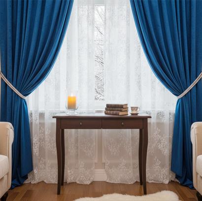

Winter in Bangladesh is usually mild compared to many other countries, but during the colder months—especially from December to January—rooms can feel chilly, particularly at night. One simple and effective way to keep indoor spaces warm is by using winter curtains.
Winter curtains are not only functional but also decorative. Many homeowners in Bangladesh switch from light summer curtains to heavier winter curtains to make their homes feel warmer and cozier. Choosing the right winter curtain can improve both comfort and style in your home. At Curtivelle you can find the right winter curtain for your home.
Talk With A ConsultantTypes of winter curtains in Bangladesh
In Bangladesh, people often prefer curtains that can both retain warmth and enhance interior decoration. Thick fabrics also add a luxurious feel to living rooms and bedrooms, making winter curtains a practical and stylish choice. Below are some popular types of winter curtains commonly used in Bangladeshi homes:
Velvet CurtainsVelvet curtains are among the most popular winter curtain options. The thick and dense fabric helps block cold air and maintain indoor warmth. Velvet also adds a luxurious and elegant look to living rooms and bedrooms. |
Thermal CurtainsThermal curtains are specially designed with insulating layers that trap heat inside the room. These curtains are excellent for bedrooms or rooms that get very cold during winter nights. |
Heavy Cotton CurtainsHeavy cotton curtains provide good insulation while maintaining a natural and breathable texture. They are durable, comfortable, and widely available in various colors and patterns. |
Blackout CurtainsBlackout curtains are thick enough to block almost all sunlight and outside air. In winter, they help retain warmth while also providing better sleep by keeping the room dark. |
Polyester Blend CurtainsPolyester blend curtains are strong, affordable, and good at blocking drafts. They are often used in modern homes because they are easy to maintain and long-lasting. |
Layered CurtainsLayered curtains combine sheer curtains with heavier outer drapes. This style helps control temperature and improves insulation. |
What should I keep in mind when choosing winter curtains?
In colder nights of winter, especially in areas with open ventilation, thin curtains may not provide enough warmth. Choosing the right curtain ensures better heat retention and improves comfort during the season. Here are some important things to keep in mind when selecting winter curtains:
- The thicker the curtain fabric, the better it can block cold air and keep heat inside. Velvet, thermal fabric, and layered cotton curtains are ideal options.
- Curtains should be wider and longer than the window to fully cover it. This prevents cold air from entering through small gaps.
- Curtains with thermal or blackout lining provide better heat retention and improve room comfort.
- Heavy curtains can collect dust easily. Choose fabrics that are durable and easy to clean or dry-clean when necessary.
- Winter curtains should match your home décor. Rich textures and deeper colors often create a cozy winter atmosphere.
- Investing in high-quality winter curtains can save money in the long run because they last longer and provide better insulation.
Some tips for winter curtains
In Bangladesh, many homes have large windows that allow cold air to enter at night. The right curtain setup can help reduce this problem while also improving the look of the room. Below are some useful tips to help you choose and use winter curtains effectively:
- Winter curtains should be made from heavy materials like velvet, thermal fabric, or thick cotton. These materials help trap heat and block cold drafts.
- Layering sheer curtains with thick curtains can provide flexibility. During the day, you can allow sunlight in, and at night you can close the thicker layer to keep the room warm.
- Darker colors such as deep blue, burgundy, dark grey, or chocolate brown absorb more heat and help create a warmer atmosphere in the room.
- Floor-length curtains help block cold air from entering through gaps near the window or door.
- For better insulation, ensure the curtain covers the entire window area. Wider curtains provide better protection against cold air leakage.
- Thermal or insulated lining significantly improves the curtain's ability to retain heat inside the room.
Choose Curtivelle for winter curtains
Curtivelle is known for providing stylish and functional curtains designed for modern homes. We also offer style-based, seasonal, and interior-based curtain solutions. Here are some reasons why Curtivelle is a good choice for winter curtains:
- Curtivelle winter curtains are made from premium materials such as velvet, thermal fabric, and heavy cotton to provide excellent insulation.
- Curtivelle offers curtains designed for different window sizes, ensuring a perfect fit and better insulation.
- Strong stitching and quality materials make these curtains long-lasting and resistant to wear.
- Curtivelle provides professional consultancy services.
- Curtivelle also provides guidance and installation services, helping homeowners choose the best curtains for their space.
FAQ about winter curtain
What fabric is best for winter curtains?
Heavy and insulating fabrics are the best choice for winter curtains. Materials such as velvet, thermal fabric, and heavy cotton help retain heat while blocking cold air.
Do winter curtains aid in maintaining a room's temperature?
Yes, winter curtains can help maintain a warmer temperature inside. Thick, insulating curtains prevent warm air from escaping and protect windows from cold drafts.
Which colors are best for winter curtains?
Rich and deep colors are ideal for winter curtains. Shades like deep blue, burgundy, and chocolate brown help create a cozy atmosphere and absorb more heat.
Are floor-length curtains better for winter?
Yes, floor-length curtains are very effective for winter. They help block cold air from entering through gaps at the bottom of the window.
How often should winter curtains be cleaned?
Winter curtains should generally be cleaned every few months, depending on dust levels. Heavy fabrics can collect dust easily, so regular maintenance is recommended.